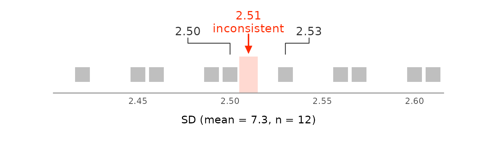
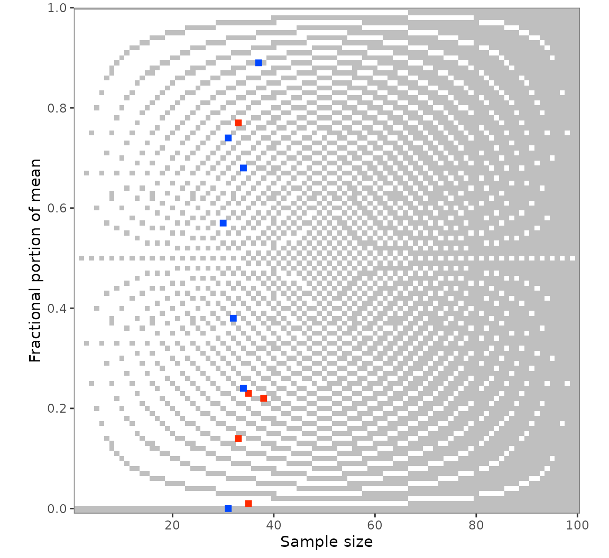
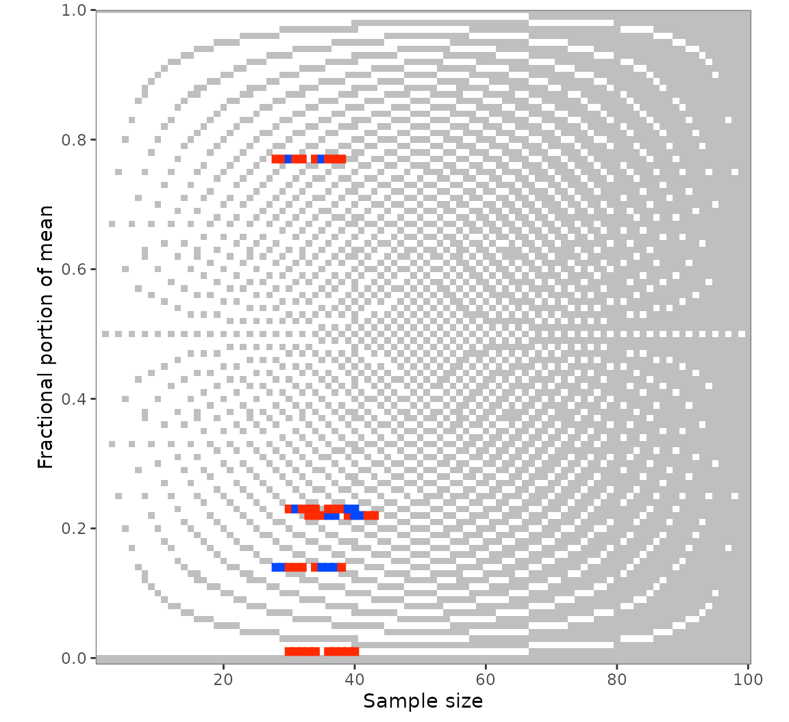

This vignette builds on vignette("grimmer"), which
covers the basics of GRIMMER testing with grimmer() and
grimmer_map(). Here are SDs computed by other conventions,
bounded scales, the means and SDs behind a test result, plots, and the
values around the reported ones with grimmer_map_seq() and
grimmer_map_total_n(). The last few work like their GRIM
counterparts in vignette("grim-in-depth").
Sample or population SD
GRIMMER takes the SD to be a sample SD, which divides by
.
A population SD, as from NumPy’s np.std() or Excel’s
STDEV.P, divides by
.
At small
,
such an SD often fails the test as a sample SD. The values 2, 4, 4, 5,
and 7 have a mean of 4.4 and a population SD of 1.62:
grimmer(
x = 4.4,
sd = 1.62,
n = 5,
digits_x = 1,
digits_sd = 2,
items_averaged = 1,
data_type = "integer"
)
#> [1] FALSE
grimmer(
x = 4.4,
sd = 1.62,
n = 5,
digits_x = 1,
digits_sd = 2,
items_averaged = 1,
data_type = "integer",
sd_meaning = "sd_pop"
)
#> [1] TRUEsd_meaning = "sd_sample_or_pop" accepts a value set that
is consistent under either convention, and the reason
column of grimmer_map() says which one. It accepts more SDs
than either convention alone, and a study has most likely computed all
its SDs the same way, so testing under "sd_sample" and
"sd_pop" separately tells you more.
sd_meaning = "se" tests whether a standard error was
reported as an SD. This test is weak: the SE was rounded, so the SD may
lie in a range sqrt(n) times as wide. Beyond very small
samples, nearly every value set passes, so a consistent result under
"se" is no evidence that an SE was reported.
Bounded scales
GRIMMER does not use the bounds of a scale. For data on a bounded
scale, such as a five-point Likert scale, see the strait package, whose
brimmest() decides exactly whether a mean and SD are
possible within the bounds.
Achievable means and SDs
grimmer_values() returns every pair of a mean and an SD
that a sample of n integers can have and that would be
reported as x and sd, with the sum and sum of
squares behind each. It is the counterpart of
grim_values(), and like it, it returns one row per
achievable pair, with case for the value set, and none if
the value set is inconsistent:
grimmer_values(
x = 5.3,
sd = 0.7,
n = 30,
digits_x = 1,
digits_sd = 1,
items_averaged = 1,
data_type = "integer"
)
#> # A tibble: 7 × 7
#> case x sd n items_averaged sum sum_squares
#> <int> <dbl> <dbl> <int> <int> <dbl> <dbl>
#> 1 1 5.267 0.6915 30 1 158 846
#> 2 1 5.267 0.7397 30 1 158 848
#> 3 1 5.3 0.6513 30 1 159 855
#> 4 1 5.3 0.7022 30 1 159 857
#> 5 1 5.3 0.7497 30 1 159 859
#> 6 1 5.333 0.6609 30 1 160 866
#> 7 1 5.333 0.7112 30 1 160 868
grimmer_values(
x = 5.23,
sd = 2.55,
n = 35,
digits_x = 2,
digits_sd = 2,
items_averaged = 1,
data_type = "integer"
)
#> # A tibble: 0 × 7
#> # ℹ 7 variables: case <int>, x <dbl>, sd <dbl>, n <int>, items_averaged <int>,
#> # sum <dbl>, sum_squares <dbl>With the sum and sum of squares of each group, a statistic that
combines several groups, such as a t-value, can be recomputed
for every possible sample and compared with the reported one.
sd_meaning = "sd_sample_or_pop" is not allowed here: the
same sum of squares gives a different SD under each premise, so call the
function once for each.
grimmer_closest() returns the one pair whose SD is
closest to the reported one, like grim_closest() for means.
For an inconsistent value set, this shows how far off the SD is:
grimmer_closest(
x = 5.23,
sd = 2.55,
n = 35,
digits_x = 2,
digits_sd = 2,
items_averaged = 1,
data_type = "integer"
)
#> # A tibble: 1 × 7
#> case x sd n items_averaged sum sum_squares
#> <int> <dbl> <dbl> <int> <int> <dbl> <dbl>
#> 1 1 5.229 2.545 35 1 183 1177A single value set: grimmer_plot_line()
grimmer_plot_line() draws the test for a single value
set, like grim_plot_line() does for means; it helps to
explain a result. It shows the SDs that could have been reported around
the reported one and marks those that a sample with the given mean and
size can have:
grimmer_plot_line(
x = 7.3,
sd = 2.51,
n = 12,
digits_x = 1,
digits_sd = 2,
items_averaged = 1,
data_type = "integer"
)
Many value sets: grim_plot_grid()
grim_plot_grid() accepts grimmer_map()
output. The raster shows the GRIM part of the test, and each value set
is colored by its GRIMMER result. A red value set on a grey cell passed
GRIM but failed GRIMMER, and a message counts these:
pigs5 |>
grimmer_map(digits_x = 2, digits_sd = 2, items_averaged = 1, data_type = "integer") |>
grim_plot_grid()
#> → Also visualizing 1 GRIMMER inconsistency.
Values around the reported ones: grimmer_map_seq()
grimmer_map_seq() varies x,
sd, and n around the reported values, by
default only for inconsistent value sets:
out_seq1 <- grimmer_map_seq(
pigs5,
digits_x = 2,
digits_sd = 2,
items_averaged = 1,
data_type = "integer"
)
out_seq1
#> # A tibble: 150 × 12
#> # GRIMMER: default settings
#> x sd n items_averaged data_type digits_x digits_sd consistency
#> <dbl> <dbl> <int> <int> <chr> <int> <int> <lgl>
#> 1 7.17 5.3 38 1 integer 2 2 FALSE
#> 2 7.18 5.3 38 1 integer 2 2 TRUE
#> 3 7.19 5.3 38 1 integer 2 2 FALSE
#> 4 7.2 5.3 38 1 integer 2 2 FALSE
#> 5 7.21 5.3 38 1 integer 2 2 TRUE
#> 6 7.23 5.3 38 1 integer 2 2 FALSE
#> 7 7.24 5.3 38 1 integer 2 2 TRUE
#> 8 7.25 5.3 38 1 integer 2 2 FALSE
#> 9 7.26 5.3 38 1 integer 2 2 TRUE
#> 10 7.27 5.3 38 1 integer 2 2 FALSE
#> # ℹ 140 more rows
#> # ℹ 4 more variables: reason <chr>, diff_var <int>, case <int>, var <chr>
audit(out_seq1)
#> # A tibble: 5 × 19
#> x sd n items_averaged data_type consistency hits_total hits_x
#> <dbl> <dbl> <int> <int> <chr> <lgl> <int> <int>
#> 1 7.22 5.3 38 1 integer FALSE 8 4
#> 2 5.23 2.55 35 1 integer FALSE 15 2
#> 3 6.77 2.18 33 1 integer FALSE 5 3
#> 4 7.01 6.68 35 1 integer FALSE 4 4
#> 5 3.14 5.32 33 1 integer FALSE 9 4
#> # ℹ 11 more variables: hits_sd <int>, hits_n <int>, diff_x <int>,
#> # diff_x_up <int>, diff_x_down <int>, diff_sd <int>, diff_sd_up <int>,
#> # diff_sd_down <int>, diff_n <int>, diff_n_up <int>, diff_n_down <int>The summary is the same as for GRIM, with hits_sd and
the diff_sd* columns added. More steps typically find more
hits:
out_seq2 <- grimmer_map_seq(
pigs5,
digits_x = 2,
digits_sd = 2,
items_averaged = 1,
data_type = "integer",
dispersion = 1:10
)
audit(out_seq2)
#> # A tibble: 5 × 19
#> x sd n items_averaged data_type consistency hits_total hits_x
#> <dbl> <dbl> <int> <int> <chr> <lgl> <int> <int>
#> 1 7.22 5.3 38 1 integer FALSE 15 8
#> 2 5.23 2.55 35 1 integer FALSE 30 6
#> 3 6.77 2.18 33 1 integer FALSE 10 4
#> 4 7.01 6.68 35 1 integer FALSE 8 8
#> 5 3.14 5.32 33 1 integer FALSE 14 7
#> # ℹ 11 more variables: hits_sd <int>, hits_n <int>, diff_x <int>,
#> # diff_x_up <int>, diff_x_down <int>, diff_sd <int>, diff_sd_up <int>,
#> # diff_sd_down <int>, diff_n <int>, diff_n_up <int>, diff_n_down <int>grim_plot_grid() accepts this output as well, and
var restricts the dispersion to one variable:
out_seq1_only_n <- grimmer_map_seq(
pigs5,
digits_x = 2,
digits_sd = 2,
items_averaged = 1,
data_type = "integer",
var = "n"
)
grim_plot_grid(out_seq1_only_n)
#> → Also visualizing 2 GRIMMER inconsistencies.
Unknown group sizes: grimmer_map_total_n()
If only the total sample size of two groups is known,
grimmer_map_total_n() tests hypothetical splits of it, as
grim_map_total_n() does; see
vignette("grim-in-depth") for a case study.
flying_pigs4 <- tibble::tribble(
~x1 , ~x2 , ~sd1 , ~sd2 , ~n ,
3.91 , 3.89 , 1.38 , 1.47 , 70 ,
3.77 , 4.37 , 1.74 , 1.44 , 65
)
out_total_n <- grimmer_map_total_n(
flying_pigs4,
digits_x = 2,
digits_sd = 2,
items_averaged = 1,
data_type = "integer"
)
out_total_n
#> # A tibble: 46 × 13
#> # GRIMMER: default settings
#> x sd n n_change items_averaged data_type digits_x digits_sd
#> <dbl> <dbl> <int> <int> <int> <chr> <int> <int>
#> 1 3.91 1.38 35 0 1 integer 2 2
#> 2 3.89 1.47 35 0 1 integer 2 2
#> 3 3.91 1.38 34 -1 1 integer 2 2
#> 4 3.89 1.47 36 1 1 integer 2 2
#> 5 3.91 1.38 33 -2 1 integer 2 2
#> 6 3.89 1.47 37 2 1 integer 2 2
#> 7 3.91 1.38 32 -3 1 integer 2 2
#> 8 3.89 1.47 38 3 1 integer 2 2
#> 9 3.91 1.38 31 -4 1 integer 2 2
#> 10 3.89 1.47 39 4 1 integer 2 2
#> # ℹ 36 more rows
#> # ℹ 5 more variables: consistency <lgl>, both_consistent <lgl>, reason <chr>,
#> # case <int>, dir <fct>
audit(out_total_n)
#> # A tibble: 2 × 10
#> x1 x2 sd1 sd2 n hits_total hits_forth hits_back scenarios_total
#> <dbl> <dbl> <dbl> <dbl> <int> <int> <int> <int> <int>
#> 1 3.91 3.89 1.38 1.47 70 4 4 0 11
#> 2 3.77 4.37 1.74 1.44 65 1 1 0 12
#> # ℹ 1 more variable: hit_rate <dbl>